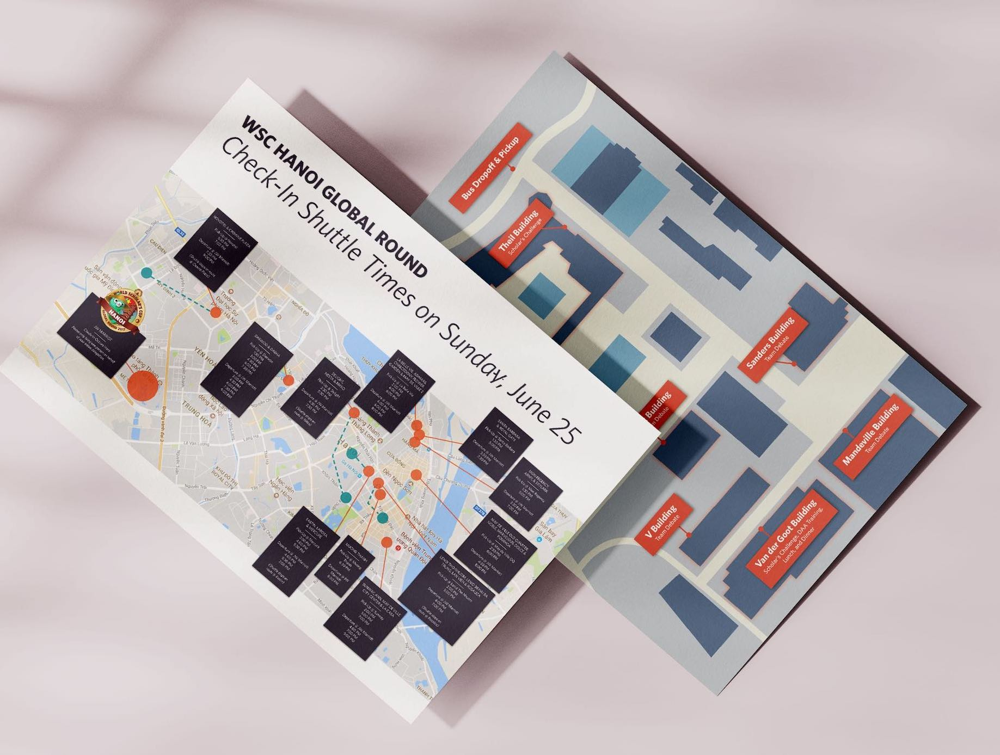
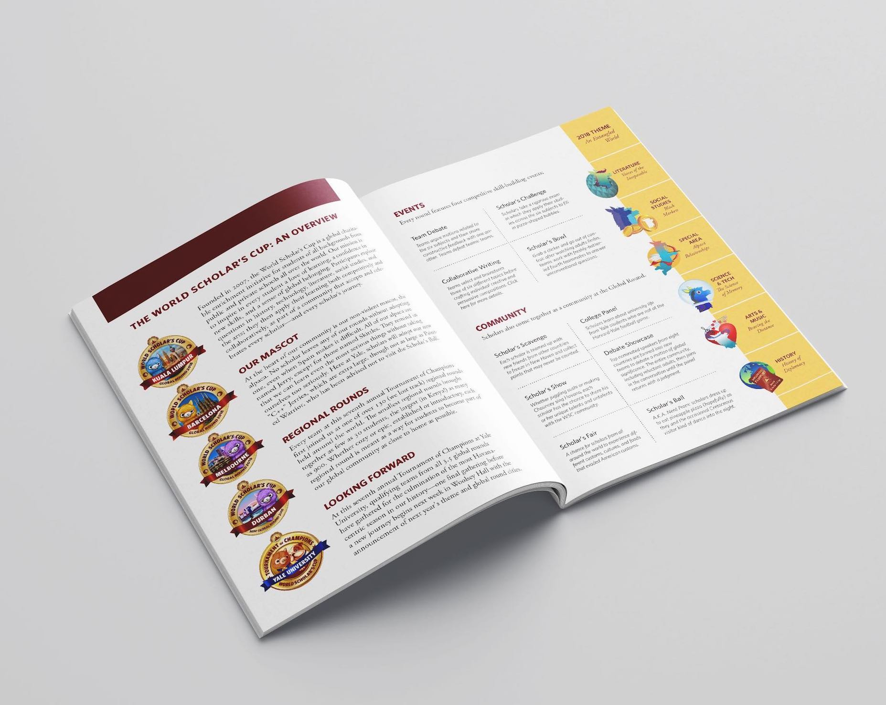
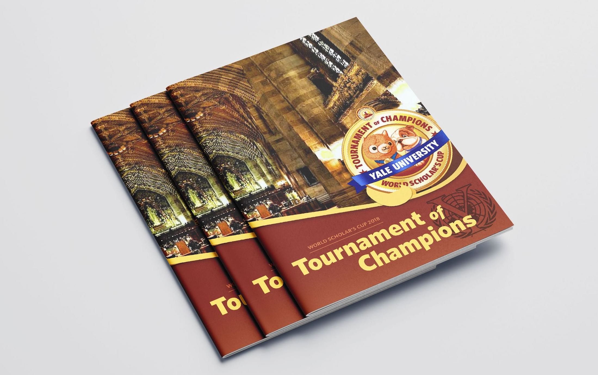
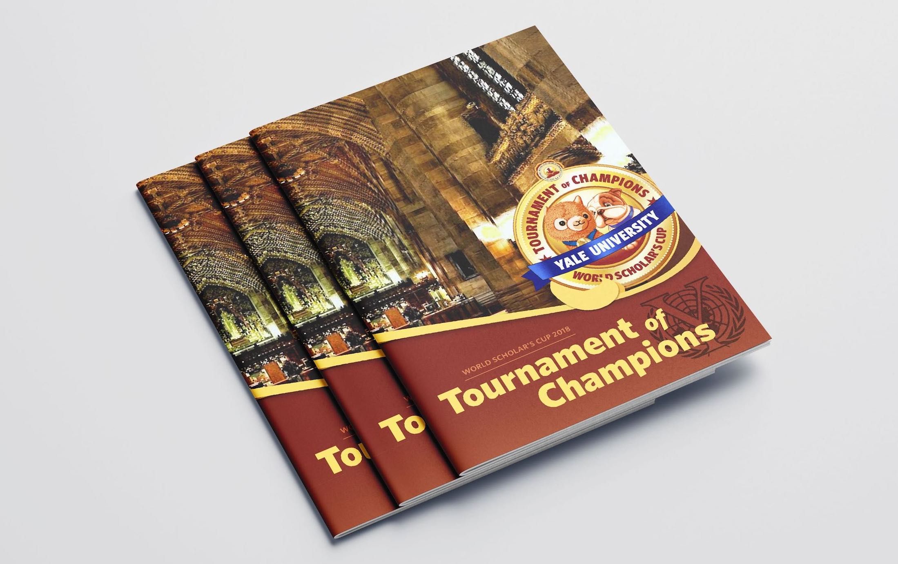
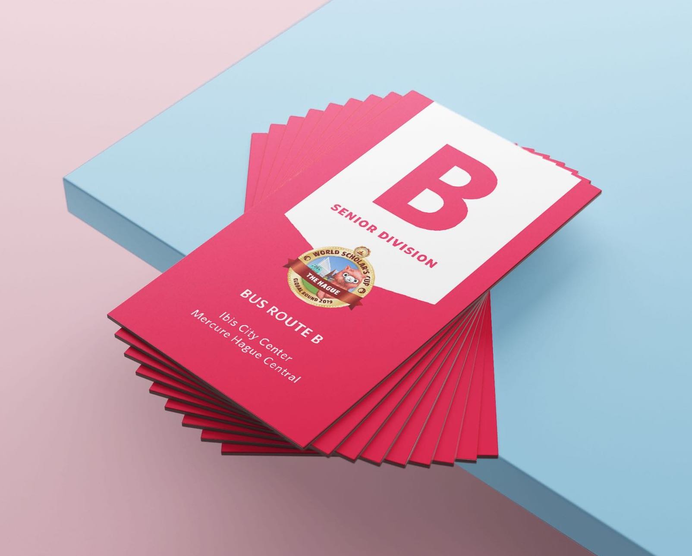

During my time with the World Scholar's Cup, I served as the in-house designer for all of our printed materials. Whether they were used for marketing or to facilitate event logistics, they all went through multiple iterations of review. The same templates are still being used to this day.
First, some background: the World Scholar's Cup is an international education organization that runs events in over 70 countries. Our tournaments orient around writing, debate, and quiz challenges, and larger global events have been attended by thousands of people at a time.
Each student falls into one of two divisions: junior or senior, based on their age. At large global events, each division follows a different schedule involving different venues—but many school delegations have students in both divisions. How can we best design our schedule in a clear way?

The solution I came up with involved using a central timeline down the middle, with juniors on the left and seniors on the right. This follows age order as well as event order, since the juniors start earlier. The color bars are both a marker for event duration as well as a code for where that event takes place. There is a color legend at the bottom of each page.
Beneath each event, I sometimes put subtitles to more clearly indicate where in the venue the event takes place, such as Plenary A Foyer within the convention center. This is helpful for one-time venues to reduce the number of colors, and makes it easier for us to choose contrasting colors to overcome color-blindness.
One difficulty we encountered was how to clearly indicate when an event ends. We use the color bar as an approximate, and events usually run back to back so it's easy to tell, but it's not the case for every event. After using this schedule at a few events, the general feedback was that only one event was vague, which we ended up just putting a subtitle description on.
On a different note, not all schedules are complicated. Since most our students travel to global events, we always offer optional tours for them to explore. While clarity is always important, I get to have more fun with simpler tour schedules, because there's not as many elements fighting for the reader's attention.
As our organization grew, the production standards of our events also grew with them. Instead of using manila off-the-shelf folders for our debate judges, we began printing custom-made ones made specifically for each event.
On the inside, the flaps include important logistical reminders, such as rules on handling feedback and conflicts of interest. The back of each folder also includes each event's logo, and some returning coaches like to collect them.
The yellow vertical strip down the middle also holds a functional purpose: each folder is labelled with a room number, using an Avery label. The strip helps us with centering the sticker, which helps a lot as we often label hundreds of folders at a time.
We run global events in the summer, but during the school year, we host upwards of 150 local events across the world. Each of those cities need to be recruited in, and I was tasked with creating a flyer to send out to new schools.
The general hierarchy is divided in two; the yellow on the left holds the concise information—location, date, contact, and eligibility. The city name is displayed at the top, and its corresponding country vector is displayed below as an element of customization, to reduce genericness. (For our Houston flyer, I may or may not have used Texas.)
In addition, the text blurb to the right is also customized somewhat for each city, depending on our history there. One of these was made for each tournament we had, and updated year by year.
At venues that involve multiple buildings, maps are integral to students and adults who have never navigated that space before. I very rarely print maps from Google Maps and use that directly—if the user doesn't need to know something, such as every other major restaurant or building name, then it doesn't need to be on the map.
This map of Yale was made from scratch with the streets realigned slightly to stay as simple as possible. The New Haven Green is colored differently to act as a visual anchor, since it's a relatively easy landmark to locate. The main venues are all distinguished with a large star, which are hierarchically higher than the red dots, which indicate buildings students may be in only for a few hours during the debate event. We divide up all the students between these buildings, but they never go outside of their assigned room. In that sense, the visual distinction helps when it's time to go to that event, and it won't clutter the map for later usage.
I make map snippets frequently, but here are two other examples of larger maps. One year in Hanoi, we discovered that the city lacked large hotels, and ended up listing over 35 smaller hotels for our delegations to stay at. Bussing them all was an absolute nightmare, but we mapped it out to help delegations visualize how far away they were and what their bus route looked like.
The other is a similar (but simpler) campus map I made for Erasmus University in the Netherlands.
These are a staple of every large event, and their lifespan extends on to the next recruiting season, when we often send out these booklets to show new schools what the experience is like. As such, it's also important for these booklets to provide enough context for those new to the program to follow along—and in fact, many chaperones at the event itself are also attending for the first time.
 

The booklets themselves are pretty self-explanatory; I show a few spreads here, but there's also pages that list every participating school and a map of all our host schools across the world. Sometimes, I include a singalong.
We have a lot of tickets. From a logistics perspective, I always try to keep these down, because one can't expect 4000 children to hold onto multiple pieces of paper for six days in a row. But situations come up where we have to issue meal tickets and bus tickets and many other forms of tickets.
Every bus route (usually around 4-7 total) has a different color and letter. For capacity reasons, we have to distinguish between junior and senior division bus tickets. Graphically, I represent it by inversing the colors. The pictured ticket is white on pink; the other division would simply be pink on white.
Since delegations generally stay at one hotel, the uniform color highlight makes it easy for drivers and teachers to verify they have the correct ticket. (Then there was that time when I accidentally switched two colors, so two sets had both green and blue... I didn't notice until after it went to print—it's always important to triple check!)
Sometimes, we've had to issue tickets specifically assigning a theater seat to every participant. In addition, we often sell tickets for any empty seats we have left in the auditorium—and it's important to give any takers something official to hold onto. We have to be very clear on the ticket what it grants them entry to.
Each of the designs you see are generally in their later evolutions, but every event, we're always finding something new to fix. I didn't notice until this summer that on the schedules, each timestamp was accompanied by a lowercase "am" or "pm" with the exception of two places that used their uppercaps versions.
Most notably, I worked on these designs mostly as a secondary role to what I usually do, which is logistics. Having that kind of background entangled with my creative process has taught me to distinguish between form and function, and that while aesthetics are fun and important, clarity is valued much more so. Perhaps it's because I got to personally execute each of these designs in real life, from overseeing their print production to dissemination to usage, that it influenced all my future designs to be grounded in reality.